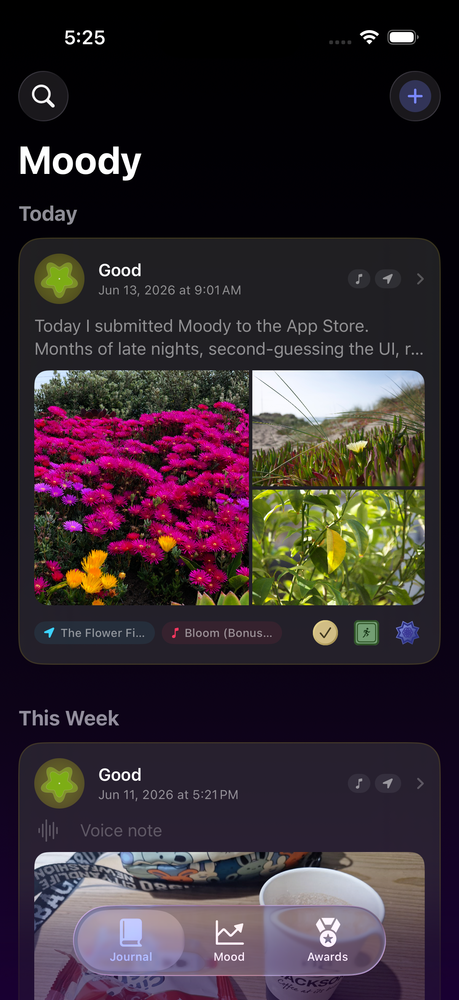
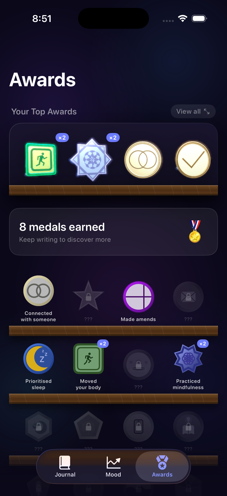
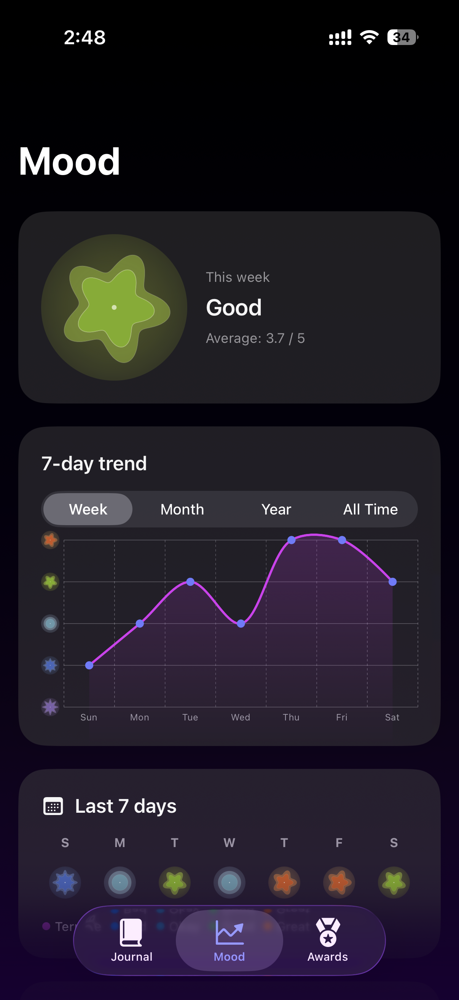

Moody is a personal journal that notices the small wins you walk past every day, and awards you for them. Track your mood, write freely, and discover who you're becoming.
Most of us underestimate ourselves. We journal about our days without ever noticing the quiet moments of courage, kindness, and growth we've tucked into them. Moody changes that.
Moody is a mood-aware journal designed to help you slow down, check in with how you're feeling, and capture what's on your mind without pressure or prompts.
As you write, Moody's AI quietly reads your entries and surfaces the achievements hiding in plain sight: the time you reached out to a friend, repaid a favour, or simply got yourself outside. Small things. Real things.
Moody doesn't hand out badges for streaks or step counts. Every award you earn is extracted directly from your own writing
Whether you prioritised sleep, moved your body, connected with someone new, or simply stopped to notice something good, Moody sees it, names it, and reminds you it counts.
A dark, calm interface designed to fade into the background so your thoughts can come forward.

Every entry lives in a calm, beautiful chronological feed. Entries can contain text, audio recordings, images, a set location, and a song that captures the mood.
Every badge you earn is grounded in something real you wrote. Moody analyzes your entry using on-device intelligence. Your data never leaves your device.

Before you write, Moody asks one simple question. The Mood Meter morphs and breathes in real time, reflecting your state of mind.
A slow, animated circle guides you through a breathing cycle before your journal opens. Moody follows a box-breathing cycle, a proven technique to reset your nervous system and bring you to a state of complete relaxation. The circle expands on the inhale, pauses, contracts on the exhale, and rests.
As a reminder of the milestones you achieve, Moody awards you with beautifully designed 3D medals. Keep writing to discover them all!

Your mood check-ins build a picture over time. Understand your triggers, appreciate the quiet days that went well, and notice how far you've come.
Every award in Moody comes from your own words. Write honestly, and Moody will find the moments worth celebrating, even if you wouldn't have noticed them yourself.
Milestones shouldn't feel like digital chores. As your journey unfolds, earn beautifully crafted medals that anchor your progress in reality.
Moody was built with a simple principle: your most private thoughts should never leave your device.
100% on-device processing. All AI analysis in Moody is performed locally on your iPhone using Apple Intelligence. Your journal entries are never sent to any server, cloud service, or third party.
The smart features in Moody, including achievement detection and mood analysis, are powered entirely by Apple's on-device Apple Intelligence models. No data leaves your iPhone. No external API calls are made with your content.
Moody requires no account to use. There is no sign-in, no profile, no analytics tracking your behavior. What you write is stored only in your device's local storage and optionally backed up to your personal iCloud account.
If you have iCloud Backup enabled, iOS may include Moody's local data in your personal device backup. This is governed entirely by you through iOS Settings. Moody itself never writes to any external storage independently.
Moody has no advertising SDK, no analytics framework, and no third-party data sharing of any kind. The app generates no revenue from your data.